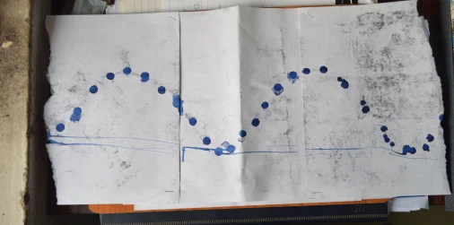
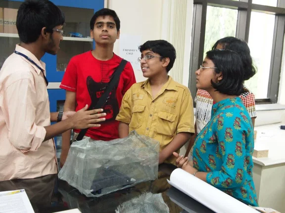

A hole was made to a pen cap and was hanged from the bob of a pendulum. The cap was filled with ink which dripped from the hole. Below it paper was placed on a movable platform. Setting the pendulum into motion, the platform below was moved with uniform velocity. Sinusoidal waves were traced on the paper.
This wire mesh doesn’t let the radio inside it work since the radio waves cannot penetrate the cage.